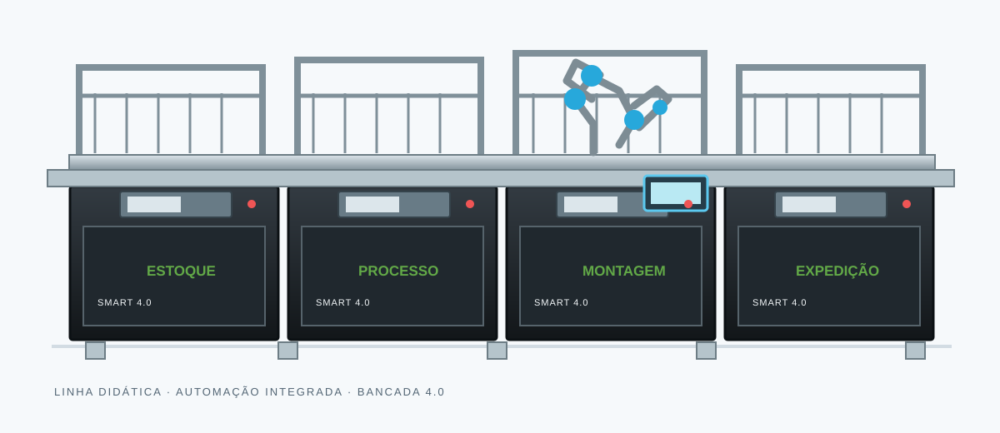
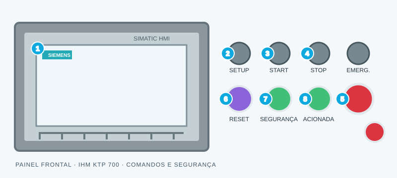
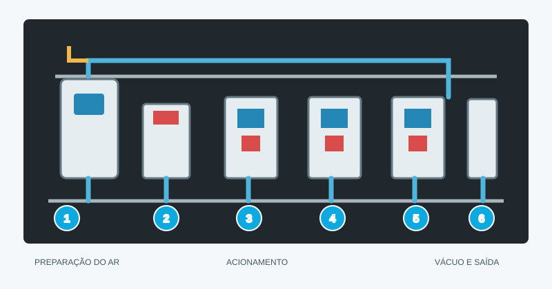
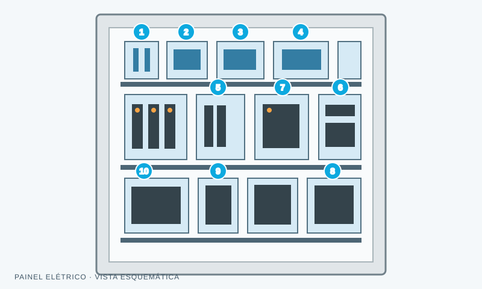

Fonte 24 VCC
Distribui alimentação em corrente contínua para os circuitos de comando.
ELÉTRICA
AMOSTRA MUNDO SENAI · PROJETO INTEGRADOR
Este é o caminho de uma peça na nossa bancada: os sensores identificam, o CLP coordena e a estação de expedição conclui o ciclo.
01Uma célula, várias disciplinasIntegração eletropneumática e controle
02Do sinal à açãoSensoriamento, lógica e movimento
03Aprender fazendoProjeto desenvolvido em equipe
ARQUITETURA INDUSTRIAL
Uma visão em camadas de como a informação percorre a indústria. Nossa bancada atua na base: onde o processo físico encontra o controle.
Onde nossa bancada atua
NÍVEL 01 + 02 · NOSSO PROJETO
Sensores identificam as peças e o CLP processa os sinais. A IHM permite acompanhar o ciclo, enquanto válvulas e atuadores executam os movimentos.
Selecione um nível para explorar a função de cada camada.
Conhecer a IHMMÓDULO CARLOS · MOVIMENTO
Aqui mostramos como o módulo de movimentação se encaixa na linha e o que ainda precisamos confirmar sobre os atuadores do robô.

LINHA COMPLETA BANCADA 4.0Movimentos lineares e de pega posicionam o produto com repetibilidade. A lógica de acionamento é integrada ao controle da bancada.
Especificações finais devem ser confirmadas com a equipe antes da apresentação.
NÍVEL 02 · CONTROLE
A tela abaixo é uma simulação para navegar pelo projeto. Mais adiante, mostramos também os comandos e indicadores do painel físico.
Demonstração visual para a feira. Os comandos desta página não se conectam à bancada física.

PAINEL FÍSICO
A IHM Siemens KTP 700 fica ao lado dos comandos de operação. Start e Stop controlam o ciclo; a emergência e os indicadores de segurança ajudam o operador a entender o estado da bancada.
NÍVEL 01 · AQUISIÇÃO DE DADOS
Cada sensor observa uma característica da peça e envia um sinal ao controle. Abra os detalhes para conhecer os princípios de detecção.
Gera um campo eletromagnético e detecta sua alteração quando um objeto metálico se aproxima, sem contato físico.
O capacitivo reage à variação do campo elétrico; o óptico usa emissão e recepção de luz. O sensor instalado determina a característica observada.
Detecta uma posição final por acionamento mecânico ou magnético, confirmando o curso de um mecanismo.
Compara a pressão da linha com um valor de comutação e disponibiliza um sinal para a lógica de controle.
Valores de alimentação são referências comuns em automação. Consulte a etiqueta e a folha de dados de cada sensor antes de ligar.
DOCUMENTAÇÃO · MÓDULO DO PROFESSOR
Consulte os tópicos de ligação e configuração do driver. A folha oficial do equipamento deve ser usada como referência final.
AJUSTES DO DRIVER
O ajuste correto depende do modelo do driver e das características do motor. Confirme os valores na documentação do professor antes de energizar.
SINAIS E ALIMENTAÇÃO
Consulte a identificação impressa no driver; a nomenclatura e a polaridade variam entre fabricantes e modelos.
PUL−Entrada de pulsoDIR−Entrada de direçãoENA−Habilitação do driverVCC / GNDAlimentação lógica, conforme modeloPROCEDIMENTO
Configure com a alimentação desligada e valide cada ajuste com o responsável pelo módulo.
INFRAESTRUTURA · NÍVEL DE CAMPO
Os dispositivos da célula trabalham em conjunto para alimentar, comandar e executar o processo de forma coordenada.
Distribui alimentação em corrente contínua para os circuitos de comando.
ELÉTRICAFiltra e regula o ar comprimido antes da distribuição pneumática.
PNEUMÁTICACentraliza o acionamento eletropneumático dos atuadores.
ACIONAMENTOComandos de operação e parada de emergência do sistema físico.
SEGURANÇAExecutam a lógica de controle e conectam sensores e atuadores.
CONTROLEMATERIAL DO PROJETO
Reunimos aqui o desenho geral e os mapas de ligação usados pela equipe. As ilustrações são esquemáticas; os nomes dos sinais seguem a documentação compartilhada.
O circuito parte da entrada de ar, passa pela preparação e segue para as válvulas, o vácuo e as conexões da próxima estação.

O painel concentra proteção elétrica, distribuição de 24 V, controle dos atuadores e comunicação da estação.

CLP · SIEMENS S7-1200
Esta é a identificação que aparece no mapa de I/O compartilhado pela equipe. Confira a revisão do programa antes de usar esses endereços na máquina.
| Descrição | Canal CLP | Endereço |
|---|---|---|
| Emergência | Ia1 | %I0.1 |
| Alimentador avançado | Ia2 | %I0.2 |
| Alimentador recuado | Ia3 | %I0.3 |
| Vacuostato | Ia4 | %I0.4 |
| Comutador 2 posições | Ia5 | %I0.5 |
| Botão Start | Ia6 | %I0.6 |
| Botão Stop | Ia7 | %I0.7 |
| Descrição | Canal CLP | Endereço |
|---|---|---|
| Avança alimentador | Qa0 | %Q0.0 |
| Aciona vácuo | Qa1 | %Q0.1 |
| Motor esteira 1 e giro | Qa2 | %Q0.2 |
| Motor esteira 2 | Qa3 | %Q0.3 |
| Válvula 1 do stopper | Qa4 | %Q0.4 |
| Válvula 2 do stopper | Qa5 | %Q0.5 |
| Status para Smart Sense | Qb1 | %Q1.1 |
DA ENTRADA AO DESPACHO
Acompanhe as etapas da célula. Selecione um ponto do fluxo para ver o que acontece naquela fase.
A peça entra na célula pela esteira e segue até a área de detecção, onde o processo começa.
FEITO EM EQUIPE
Entre montagem, ligação e testes, cada parte foi tomando forma até trabalhar em conjunto. Este site reúne o que aprendemos e o que apresentamos na Amostra.
Kristopher, Matheus e Antonela
Equipe Bancada de Expedição
[Curso] · [Unidade SENAI]